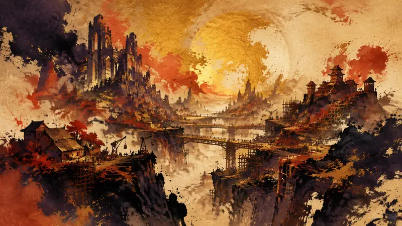

先鸦｜黎明快讯
《Guild Wars 3》PC 预览：或许能让 MMORPG 重新振作（译）
玩家能动性：政策如何限制它、产业如何塑造它、叙事设计如何实现它。

《Guild Wars 3》在 Gamescom 2026 以约 20 分钟的 hands-off 预览亮相，展示了仍处于 pre-alpha 阶段的移动与战斗系统。预览特别强调立体地形、没有耐力限制的攀爬与滑翔，以及会影响攻击伤害的动量；合作部分则让战士的盾牌成为队友跳跃的踏板，死灵法师也能为队伍武器附加火焰效果。这些设计让作品看起来有意挑战传统 MMORPG 的移动与合作方式，但长期内容与社群承诺仍无法通过一次前瞻得到确认。
来源预览
Preview L'un des paris les plus fous du jeu vidéo moderne : j'ai vu Guild Wars 3 en avant première et il pourrait bien ressuciter les MMORPG ! sur PC
来源：JeuxVideo.com
先鸦观点
MMORPG 的吸引力在于长期共同生活，但这也会把玩家的时间绑定在持续运作的世界上。预览可以带来期待，却不能替玩家保证多年后仍有值得留下的社群与内容，因此选择等待或退出都很合理。
本段为 AI 产出的观点，自动发布，人工于发布后复核。